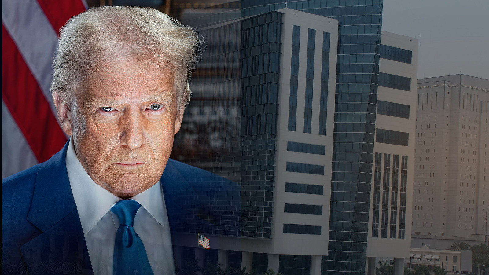

USA / MEDIER / RETTSSAK ·
Trump krevde ti milliarder dollar fra en avis. Dommeren avviste søksmålet.
En føderal dommer i Florida har avvist Donald Trumps milliardsøksmål mot utgiveren av The Wall Street Journal og flere andre saksøkte. Trump mente avisen hadde ærekrenket ham gjennom en artikkel om et omstridt bursdagsbrev til Jeffrey Epstein. Retten avgjorde ikke om brevet var ekte.

En amerikansk føderal domstol avviste lørdag 31. oktober 2026 president Donald Trumps søksmål mot Dow Jones, selskapet som utgir The Wall Street Journal, morselskapet News Corp, mediemogulen Rupert Murdoch og flere andre saksøkte.
I det reviderte søksmålet krevde Trump minst ti milliarder dollar i erstatning.
Dommer Darrin P. Gayles ved den føderale distriktsdomstolen i Sør-Florida konkluderte med at Trump heller ikke denne gangen hadde fremsatt tilstrekkelige konkrete påstander om at avisen publiserte opplysninger den visste var falske, eller med grov likegyldighet til om de var sanne.
Søksmålet ble avvist with prejudice. Det betyr at Trump ikke kan levere enda en revidert versjon av de samme kravene til distriktsdomstolen. Han har fortsatt mulighet til å anke avgjørelsen.
Brevet til Epstein
Bakgrunnen er en artikkel The Wall Street Journal publiserte i juli 2025.
Avisen omtalte et bursdagsalbum som ble satt sammen til Jeffrey Epsteins 50-årsdag i 2003. Albumet skal ha inneholdt et seksuelt antydende brev med en tegning og en signatur knyttet til Donald Trump.
Trump avviste at han hadde skrevet eller signert brevet. Han hevdet at avisens omtale var falsk og ærekrenkende, og gikk til søksmål.
Det opprinnelige søksmålet ble omtalt som et erstatningskrav på 20 milliarder dollar. Etter at dommeren avviste den første versjonen i april 2026, leverte Trumps advokater et endret søksmål i mai med krav om minst ti milliarder dollar.
Dette ble også avvist.
Et avslag er ikke nok
Et sentralt spørsmål var om avisens publisering oppfylte det amerikanske rettsbegrepet actual malice.
For offentlige personer innebærer dette at en som reiser ærekrenkelsessøksmål, må kunne vise at de omstridte opplysningene ble publisert med kunnskap om at de var falske, eller med grov likegyldighet til sannheten.
Dommeren avviste argumentet om at avisen skulle ha stanset publiseringen bare fordi Trump nektet for å ha skrevet brevet.
Retten viste blant annet til at journalistene hadde forsøkt å undersøke saken og innhentet kommentarer fra Trump og andre involverte før publisering.
Avisen hadde også gjengitt Trumps benektelse.
Dommeren mente at Trumps reviderte søksmål fortsatt ikke inneholdt tilstrekkelige faktiske opplysninger til å underbygge at de saksøkte opptrådte med actual malice.
Retten avgjorde ikke om brevet var ekte
Avgjørelsen er samtidig ikke en dom over brevets autentisitet.
Domstolen tok ikke endelig stilling til om Trump hadde skrevet brevet, eller om avisens fremstilling av brevets opphav var korrekt.
Søksmålet ble avvist på grunnlag av de juridiske kravene til et ærekrenkelsessøksmål fra en offentlig person.
Det er derfor ikke riktig å tolke avgjørelsen som en rettslig bekreftelse på at Trump skrev brevet.
Trump varsler anke
Etter avgjørelsen opplyste en talsperson for Trumps juridiske team at presidenten ville fortsette kampen mot The Wall Street Journal og de øvrige saksøkte.
Advokatene har varslet anke, men per 2. november er det ikke bekreftet i de offentlig tilgjengelige kildene som er gjennomgått, at en formell ankeerklæring er innlevert.
En talsperson for Dow Jones har på sin side uttrykt tilfredshet med rettens avgjørelse.
Dommeren har foreløpig heller ikke avgjort om de saksøkte har krav på å få dekket advokatutgifter.
Dermed er Trumps søksmål avvist i distriktsdomstolen, mens spørsmålet om en eventuell ankebehandling fortsatt står åpent.